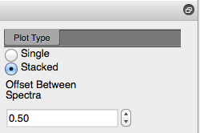
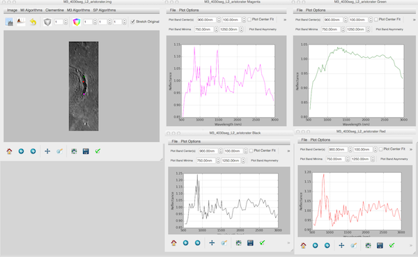
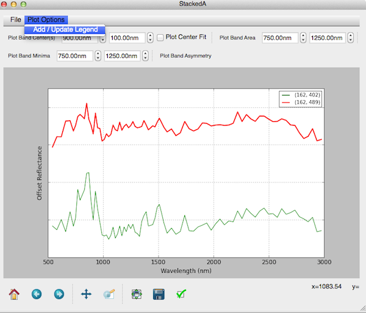

Plotting
PySAT leverages the MatPlotLib library to handle all of the plotting. This includes the display of image data, that is read using GDAL and stored as an array.
Interactive Navigation
Matplotlib provides interactive navigation within a plot window via the navigation toolbar.

For full documentation see the awesome MatPlotLib page
Plot Types
PySAT support single and stacked plotting in an effort to provide both exploratory data analysis capabilities and presentation ready figures.

The Single radio button generates a new plot every time that a map plot is clicked. Alternatively, the Stacked radio button adds subsequent spectra to the same window with a spacing defined by the offset spin box.
Moving Spectra within a Plot
When continuum corrected spectra are are added to a plot window, An offset of 0.5 is generally sufficient to ensure adequate separation and avoid overlap. In cases when more (or less) overalp is desired a spectra can be manually moved via a contextual menu.

The spectra is then ‘shifted’ by the amount specified in the Offset Between Spectra spinner. This value can be positive or negative.
Moving Spectra Between Plots
In an EDA environment, PySAT is desiged to allow the user to open many single plots, identify those spectra of interest, and then generate a unified, stacked plot.
Below, a sample of 4 individual plots is shown. We imagine that the user has selected the four points as spectra of some interest and wishes to combine them into a single plot for comparison or inclusion as a figure in a paper.

By selecting a spectra in one of the windows and activating the contextual menu, it is possible to select Add Spectra to Plot and add the selected spectra to any of the open plot windows.

Alternatively, PySAT allows you to open a new, empty plot window and add spectra.

Using the same functionality via the contextual menu, it is then possible to add the spetra to the new empty plot.

Spectral Spacing
When moving spectra between plots, the Offset Between Spectra spinner is checked to see if we she add offset.
Legend
PySAT provides a clickable / draggable legend. To render or update the legend (because new data was added or old data was removed) the Plot Options > Add / Update Legend option can be used.

Legend Entries
The values shown in the legend are the line and sample (pixel) that was clicked to select a given spectra. We believe that this information is essential in facilitating repeatability of the analysis. If you would like the legend to support some other identifier, [please file an enhancement request](https://github.com/jlaura/pysat/issues/new)
Setting the Plot Title
Finally, PySAT support setting a custom plot title via the native MatplotLib interface. Simply click the green checkmark at the end of the toolbar.

This open the Figure options dialog where a wide variety of visualization items can be altered. For more information see the symbology section of the documentation.